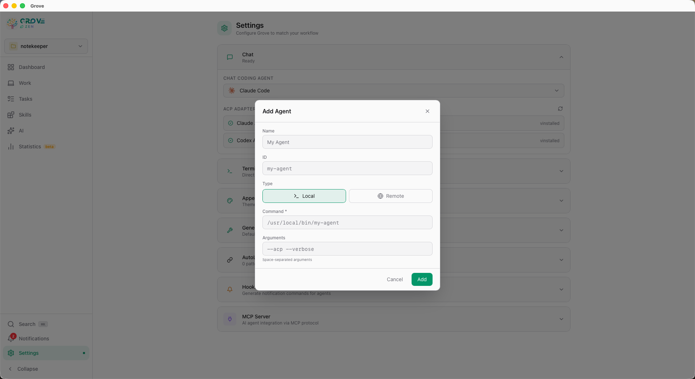
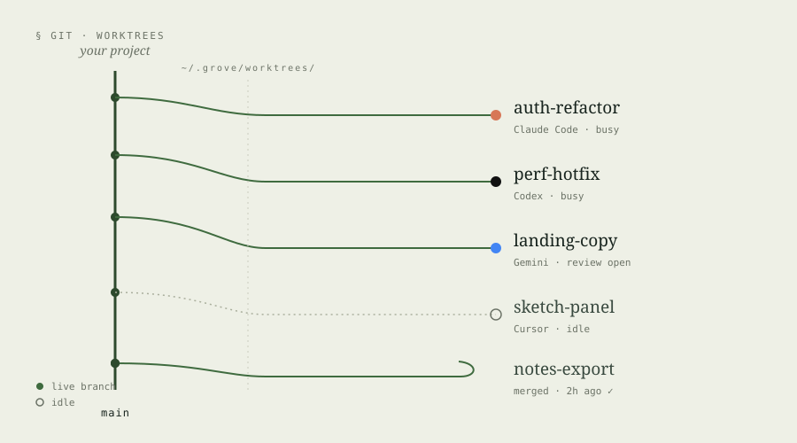
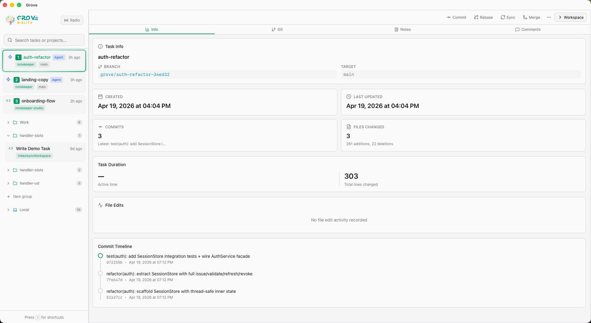
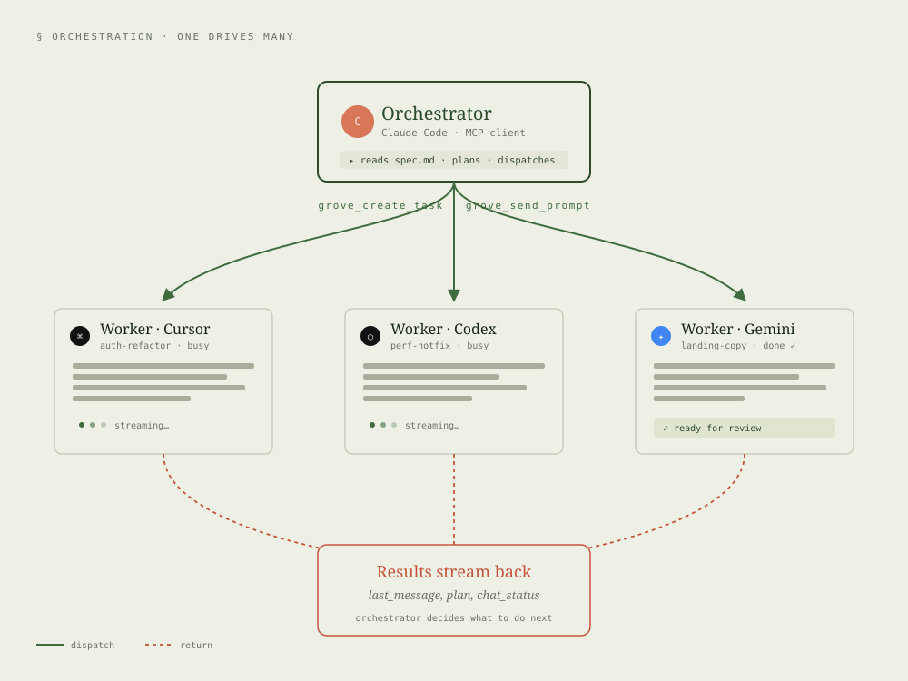

Every agent,
in parallel.
Grove speaks every major coding agent's protocol. Each task gets its own Git worktree, its own session, its own spec — run ten agents at once without collision. Coordinate them by hand, or let an orchestrator agent drive the fleet for you.
Speak every
agent's language.
Grove implements the full Agent Client Protocol (ACP). Ten agents are built in out of the box, and three more (Hermes, Kiro, OpenClaw) ship with first-class icons ready for custom ACP configs. When a new agent ships, Grove usually works with it the same day.
Bring your own.
Every agent in Grove — built-in or not — is defined the same way: a launch command, or an HTTP endpoint, and a per-chat model + mode picker. Add one in Settings. It shows up immediately.
- Local command agents — any binary that speaks ACP over stdio
- Remote URL agents — any HTTP endpoint
- Per-chat model + mode selection, saved per task
- Availability detection — unavailable agents are hidden

Ten agents.
Zero collisions.
Grove builds on Git worktrees. Every task becomes a branch plus a fully isolated working directory, with its own tmux or Zellij session on Unix. Your agents never write to the same file at the same time.

A branch of one's own.
When you create a task, Grove creates a worktree. The agent works there. Nothing it does touches your main checkout. Review the diff, approve it, let Grove merge it back.
- Per-task Git worktree — never collides with other tasks
- Per-task session (tmux or Zellij) — persistent across restarts
- Per-task spec (Task Notes + injected GROVE.md)
- AutoLink heavy dependencies across worktrees — tasks start instantly
Every task,
every project.
Blitz is Grove's cross-project view. Every active task from every registered repo, sorted by status, with one-click jump to any agent session. Live busy indicators push in real time over WebSocket.
- Cross-project aggregation with live status
- Take Control — reclaim an agent session from a remote client
- Observation Mode — multiple clients, one session, zero contention
- Command palette (⌘K) for instant task switching

Let an agent drive
the fleet.
Grove ships an MCP server that exposes itself to other agents. That means an orchestrator agent can create tasks, spawn worker agents, read notes, reply to reviews, and close the loop — without you in the critical path.

Hierarchy, on demand.
Outside a task, an agent sees management tools: create projects, create tasks, list chats, send prompts. Inside a task, agents see execution tools: read notes, reply to reviews, complete the merge. Grove filters which tools are visible by context, so agents never take the wrong action.
grove_create_task,grove_list_tasks,grove_send_promptgrove_read_review,grove_reply_review,grove_complete_task- Fuzzy search across every
grove_list_*tool - Orchestrator-authored messages get a sender badge in the UI
Shell mode
Press ! in chat to run a command in the task's worktree — real-time streaming output, exit code, kill button.
@-mentions
Type @ to pull any file, folder, or note into the agent's context. Fuzzy search, Shift+Tab to cycle modes.
Parallel conversations
Multiple chat sessions per task. Rename, switch, delete. Full history replays on WebSocket reconnect. Pending queue survives disconnects.
Plan & Todo panels
Grove picks up ACP plan notifications and the agent's plan file, rendering both inline while the agent works.
Take Control
If another process owns a chat session, any client can observe live or reclaim ownership. No stuck sessions.
Multimedia ACP
Images, audio, resource blocks. Drop files over the whole chat window. The agent sees what you show it.